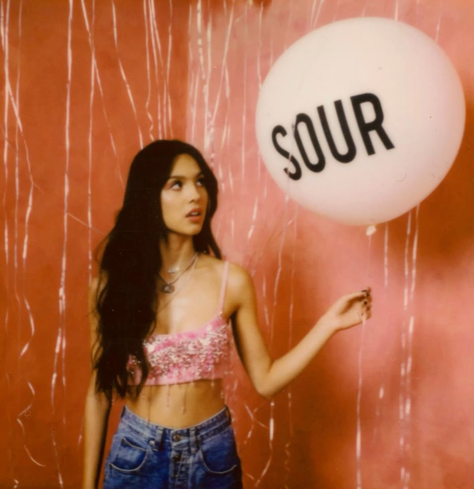

SOUR (2021)
SOUR es el álbum debut de Olivia Rodrigo. Incluye canciones como drivers license, deja vu y good 4 u. Sus temas principales son el desamor, los celos, la tristeza y las dificultades de crecer. Combina el pop con sonidos alternativos y pop rock.